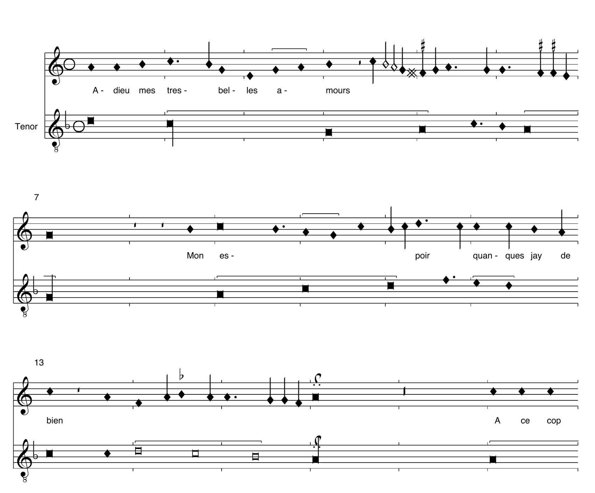
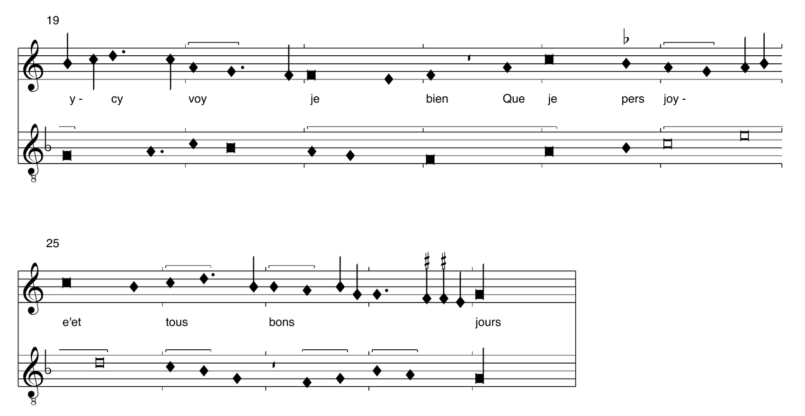
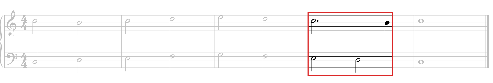
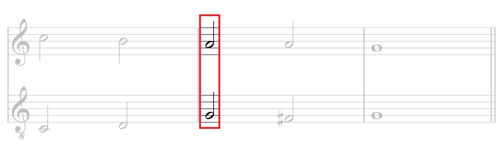
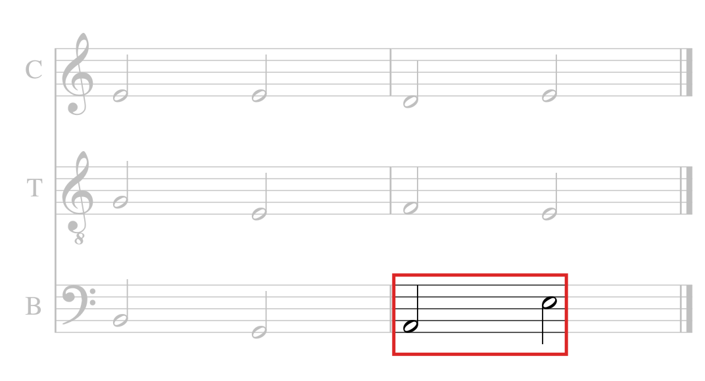
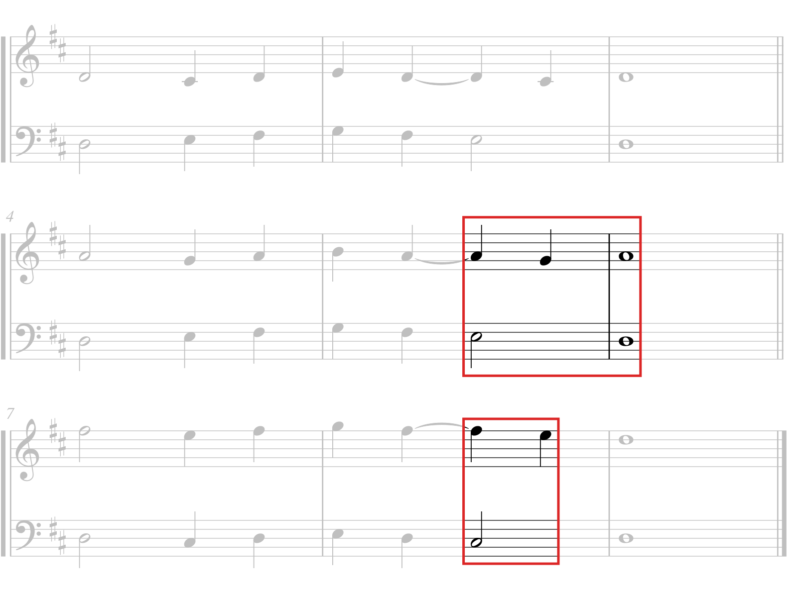

ZHdK · HS 2026
3. Sitzung // 28.9.2026 // Niels Pfeffer






„[…] chiamerò quella parte, che stà & riceve la percossa Patiente. Perche patisce quella cosi fatta percossa; & quella parte, che offende l'altra, & è quella, che opera e fa la Dissonanza Agente.“
[…] nenne ich die Stimme, die stillsteht und den Schlag empfängt, Patiente, weil sie diesen Schlag erleidet; und die Stimme, welche die andere verletzt und die Dissonanz hervorbringt, Agente.
„Quella parte, la quale nelle Dissonanze sarà patiente, sempre doppò la percossa hauta, descenderà per un grado, sia poi di Tuono, ò Semituono. Vada poi la parte agente ovunque più le piace, pur che doppò tal offesa si incontrino in una consonanza […].“
Die Stimme, die bei den Dissonanzen Patiente ist, steigt nach dem empfangenen Schlag immer um eine Stufe ab, sei es um einen Ganz- oder einen Halbton. Die Agente mag dann gehen, wohin es ihr beliebt, sofern sich die Stimmen nach dieser Verletzung in einer Konsonanz treffen […].
Giovanni Maria Artusi, Seconda parte dell'arte del contraponto, Venedig 1589, S. 27, 28 und 30. Text und Notenbeispiel nach der Transkription im Thesaurus Musicarum Italicarum (Universität Utrecht).